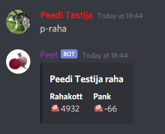

Discord bot Peet
Platform: Discord
Aasta: 2021
Mis keeles programmeeritud: Python
Mis programme kasutasin: PyChram, Replit
 Peet on Discord'i bot mis vastab kui talle midagi kirjutada.
Alustasin selle projektiga aasta 2021 märtsis ning arendan seda siiamaani.
2021 mais ehitasin raspberry pi abil serveri, et Peet saaks ööpäevaringselt toimida.
Kirjutasin siia mõned lahedamad asjad mida Peediga teha saab.
Kirjuta peet help kui tahad abi! Vaatame mis siin kirjas siis on.
Peet on Discord'i bot mis vastab kui talle midagi kirjutada.
Alustasin selle projektiga aasta 2021 märtsis ning arendan seda siiamaani.
2021 mais ehitasin raspberry pi abil serveri, et Peet saaks ööpäevaringselt toimida.
Kirjutasin siia mõned lahedamad asjad mida Peediga teha saab.
Kirjuta peet help kui tahad abi! Vaatame mis siin kirjas siis on.
 Esiteks, Peet vastab sulle Discord'i serveris kui ütled talle tere, head aega, kuidas läheb või muud sarnast.
Lisaks sellele oskab ta /ytle käsuga ükskõik mida öelda.
Peet oskab Discord'i rolle teistele anda ja neid ära võtta.
Esiteks, Peet vastab sulle Discord'i serveris kui ütled talle tere, head aega, kuidas läheb või muud sarnast.
Lisaks sellele oskab ta /ytle käsuga ükskõik mida öelda.
Peet oskab Discord'i rolle teistele anda ja neid ära võtta.

/votaroll töötab samamoodi kui /annaroll lihtsalt "annaroll" asemel tuleb kirjutada "votaroll"
Peediga saab ka teistele kirju saata, nagu DM, aga Peedi kaudu.
Kirju saab ka saata salaja, tuleb kirjutada p-saadakirisalaja ja samu käske kasutada
Peedil on Among Us mängu teemaline käsk p-sus mis ütleb suvaliselt 0-100% kui kahtlane ehk sus sa oled.
Ning Peedilt saab küsida kui palju keegi midagi on.
Nonii, Peedi pood siis. P-poodhelp käsuga saad vaadata mida poes teha saab.
p-info käsuga vaatame näiteks mida "gaming pc" abil teha saab.
Kui soovid seda osta, siis 700 hakkliha eest saad sa p-osta gaming pc käsuga selle osta
Kui ostad mingi eseme, siis saad p-kasuta käsu abil seda kasutada.
Hakkliha on Peedi raha, sellega saad osta poes müüdavaid asju. Paljude asjadega on võimalik hakkliha kaotada või seda võita
p-raha käsuga saad vaadata palju hakkliha sul hetkel on.
Kui sa kaotad mingi tegevusega hakkliha ja sul on 0 hakkliha, siis sa jääd võlgadesse. Enamus tegevusi võtavad sult hakkliha ära rahakotist, aga gaming pc'd kasutades kaotad raha pangast

p-rahapanka ja p-raharahakotti käskudega saad raha kas panka viia või seda sealt võtta
Kui võidad gaming pc abil hakkliha, siis tuleb see panka. Pangas on kasulik hoida hakkliha mida sa ei taha kulutada kuna kui sa peaksid surema, siis jääb see alles. Poest saab asju osta ainult selle hakklihaga mis on sul rahakotis seega hakkliha mida sa kulutada tahad on kasulik hoida rahakotis
p-tase käsk näitab mis level sul on ja mitu xp sul on.
p-mina üldist infot sinu kohta, nt kui palju sul hakkliha kokku on, mis level oled jne.
Hakkliha saab veel teenida kui teed tööd või mängid minimänge.
p-toota käsk
Saab kasutada iga 10m tagant
Annab 1-200 hakkliha ning 0-20 xp, oleneb levelist ja xp'st
p-tootapalju käsk
Saab kasutada iga 2 tunni tagant
Annab 50-1200 hakkliha ning 5-120 xp, oleneb levelist ja xp'st
p-daily käsku saab kasutada iga 24 tunni tagant
Peediga on võimalik palju teisi asju veel teha, aga kuna neid on nii palju, siis ma neid siia kirja ei pane. Minu Discord'i serveris on võimalik neid käske järgi proovida kui on soovi :D